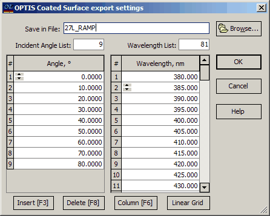

Export OPTIS Coating file
Export OPTIS Coating file
OptiLayer allows for the export of coating performance data to OPTIS SPEOS light simulation software, which can be accessed at http://www.optis-world.com. This export functionality is similar to exporting ZEMAX Performance Tables.
When exporting as an OPTIS coating performance table, OptiLayer exports a set of transmittances and reflectances calculated for both polarizations at the specified range of wavelengths and incident angles. Prior to executing the OPTIS SPEOS Export operation, it is essential to input the set of incident angles and wavelengths required for calculating performance in the specified form. This ensures that the exported data aligns with the necessary parameters for accurate performance assessment within OPTIS SPEOS software.

The incident angles and wavelengths can be set with arbitrary values. For convenience, this dialog provides buttons for quickly accessing the Grid Generator and Column Editor tools.
You can specify the name of the export file in the Save in File field, or alternatively, you can enter it using the Browse button. To begin the OPTIS Export procedure, click the OK button. The exported file will be saved with the default extension *.coated for further use within OPTIS SPEOS software.